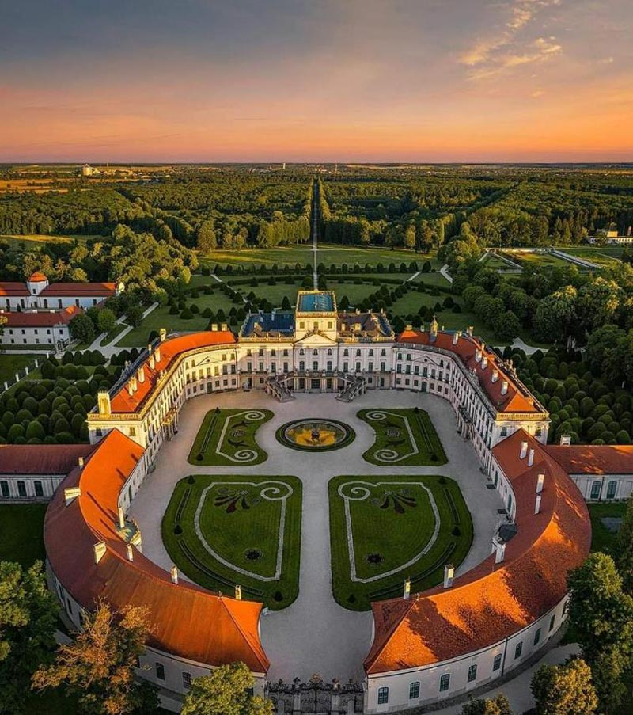
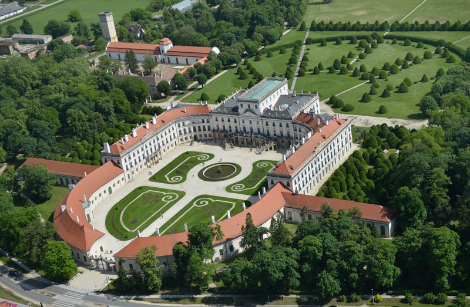
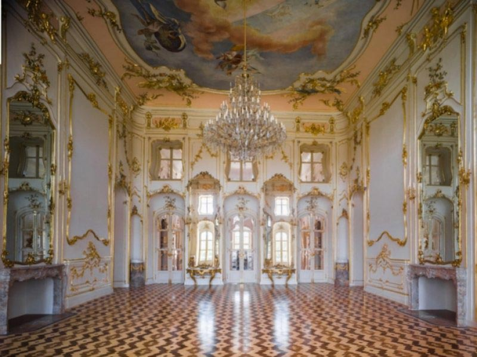
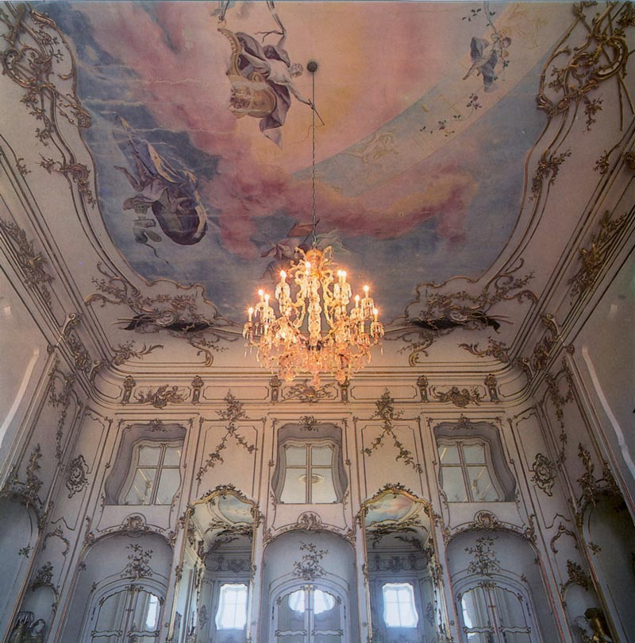
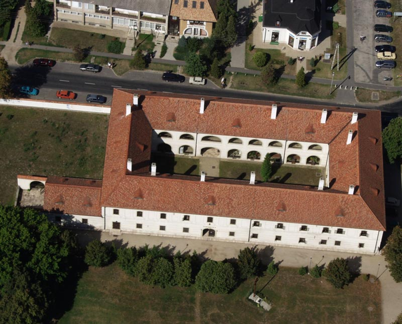
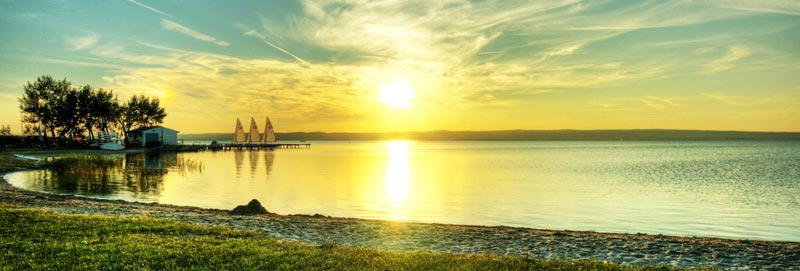
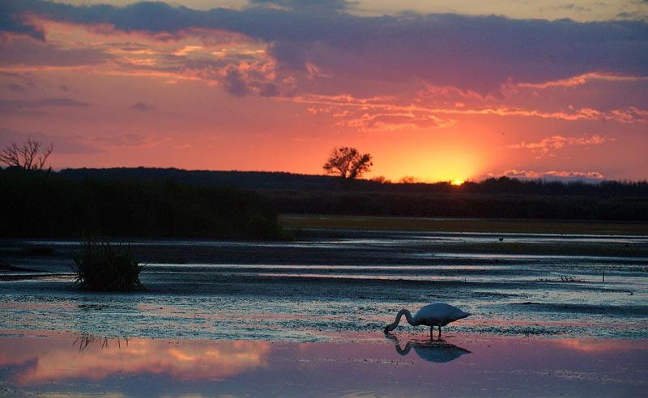
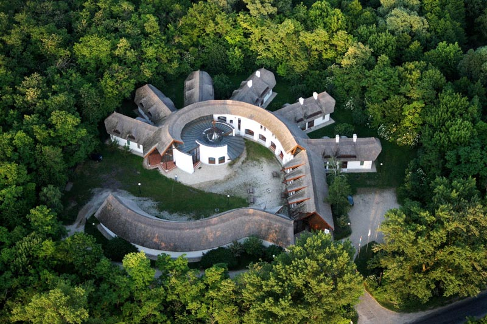
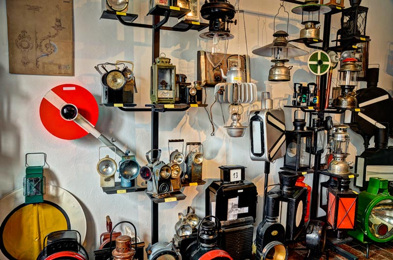

费尔特德
费尔特德
费尔特德是位于匈牙利西北部与奥地利接壤的边境的城镇，位于杰尔和肖普朗之间，面积50平方公里，人口3,400，其中约九成居民信奉天主教。费尔特对定居点的生存和发展影响最大。在费尔特盆地，连同相关的汉萨，沿着维也纳和潘诺尼亚的断层线形成了东阿尔卑斯山。这里有盐碱草原和草原草甸。诺伊西德尔湖的内部以及生物圈保护区的自然保护区是一个高度保护的区域。汉萨的水位波动很大。1736年，费尔特德可以步行走路，1742年，再次被水淹没。反对沼泽的第一人是伯爵埃埃斯泰特哈兹伯爵。他在埃斯泰尔哈萨和波莫吉之间的狭窄沼泽上铺满了由树枝制成的土路。在1950年改为费尔特德之前一直叫埃斯泰尔哈萨。在1766年米克洛斯•埃斯泰尔哈萨王子的信中可以看到埃斯泰尔哈萨城堡的名字。埃斯泰尔哈萨城堡的建造始于1762年 ，城堡竣工时刻一个新村庄诞生了。这是匈牙利最强大的城堡群。
费尔特德的另一个定居点是苏特罗。苏特罗马天主教堂是该定居点的较古老部分，最早的记载在1313年。考古证明它在石器时代就有人居住。这里是中世纪的农奴村。1995年7月1日，匈牙利共和国总统宣布费尔特德为城市。2001年费尔特德景观被授予世界遗产称号。新建造的自行车道也促进了该地区的旅游业的发展，同时国家公园也是远足和大自然爱好者的天堂。

景点：埃斯泰特哈兹城堡
匈牙利最大、最美丽、最著名的景点是埃斯泰特哈兹城堡，这座巴洛克式城堡被誉为“匈牙利凡尔赛宫”。该建筑建于建造始于1762年。完整城堡的规模令人印象深刻。它的主立面长100米，翼长48米。巨大的建筑有126间客房。城堡的大门是一座华丽的锻铁作品。无论从技术上还是艺术上，它都是匈牙利最美丽的大门之一。房间均以洛可可式的装饰和家具。建筑物的核心是楼上的宴会厅和音乐厅。音乐厅是宴会厅的前庭。高9米，宽10米，长13米的大厅的墙壁被几乎一半的支柱隔开。从城堡内部和庭院开始，一个华丽的石梯通向楼上的音乐厅。



景点：音乐屋
音乐屋建于1769年，位于艾斯特哈兹城堡公园的西边。音乐宫是音乐家、演员和歌剧的摇篮。约瑟夫•海顿曾生活在这里。他在一个有十二个兄弟的大家庭中长大，他的音乐才能在年轻时就已显现。他在5岁时接受了音乐和唱歌课程，并在8岁时成为维也纳圣史蒂芬教堂儿童合唱团的成员。从1759年开始，他担任捷克共和国莫尔辛伯爵庄园的音乐总监。帕尔•埃斯泰特哈兹于1761任命他为艾森斯塔特管弦乐队的第二位指挥。1768年相关的剧院和音乐厅，音乐家们也搬到了城堡。海顿在埃斯泰特哈兹度过了大部分创作生涯。经过约瑟夫•海顿的努力，公爵府的歌剧文化风靡欧洲。

景点：费尔特洪沙格国家公园
费尔特洪沙格公园是位于匈牙利西北部的国家公园，始建于1991年，面积236平方公里，该地区的新锡德尔湖是中欧的第三大湖泊。费尔特湖与新钖德尔湖文化景观是科教文组织世界文化遗产中的重要一部分。自1989年以来一直被视为具有国际重要意义的野生水域之一。面积309平方公里的新西德尔湖是欧洲最西端的草原湖。高盐度湖被藤蔓覆盖的地中海丘陵，亚高山山脉和白雪皑皑的高山所环绕。匈牙利一侧的特征是面积巨大的稠密芦苇，奥地利一侧的特征是开放的水面。费尔特湖为丰富的动植物提供了良好的生活条件。湖的芦苇床主要在匈牙利海岸上体验。在这芦苇被割断了一条240公里长的运河网络，以通向开放水面和被芦苇封闭的内陆湖泊。


景点：白鹭城堡
白鹭城堡建于1993年，是匈牙利最大的芦苇覆盖地的建筑。它的展厅中的设有常年展览，临时展览和旅行展览。有关保护区的出版物和其它教育资料可在此处获得。
白鹭城堡的名字来自当地鸟类的典型代表白鹭，它是匈牙利自然保护区和费尔特湖-汉萨国家公园的徽章。大白鹭的羽毛是雪白色的。她的翅膀上穿有宽松的装饰羽毛，它会定期在非冻结水域越冬。大白鹭在匈牙利得到更多的保护。
大白鹭的栖息地是大片茂密的芦苇，沼泽和湖泊。1928年，匈牙利鸟类学家协会成立。由于受到严格保护，中欧最大的白鹭群有700多对，现在生活在国家公园内。

景点：铁路灯博物馆
铁路灯博物馆的创始人约瑟夫•哈拉戈维奇。他从小就酷爱铁路上的灯具。这里展示的270盏铁路灯都很特别，每个都有一个故事。灯来自全球22个国家和地区，来自瑞典，蒙古，美国和新西兰的灯笼也将展出。最大的灯高120厘米，最小的可以折叠平放。光源首先使用蜡烛，然后使用菜籽油，再往后使用易燃煤油工作。有的光源还用碳化物，丙烷-丁烷气。随着时间的流逝，煤油灯也被“电气化”，形式仍然是旧的，燃烧的灯芯被白炽灯取代。还制作了混合标本，通常由电源供电，如果断电，则用煤油操作，以防万一。灯博物馆中最古老的作品可能是在1838年至1860年之间制作的。
